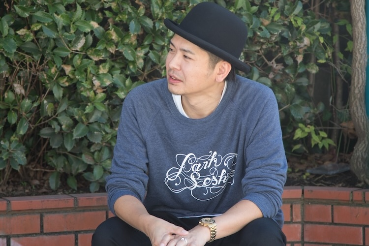
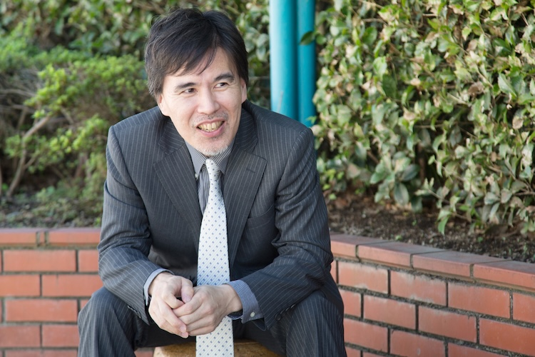
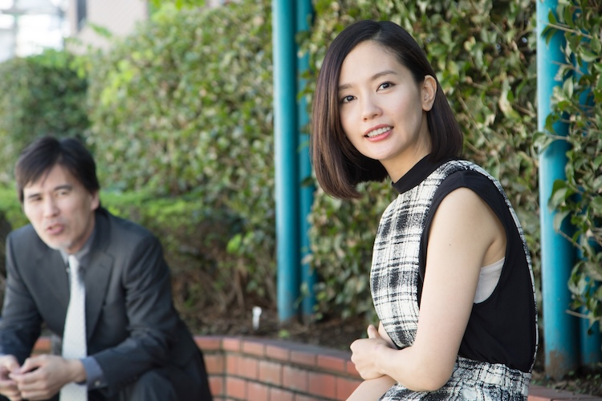
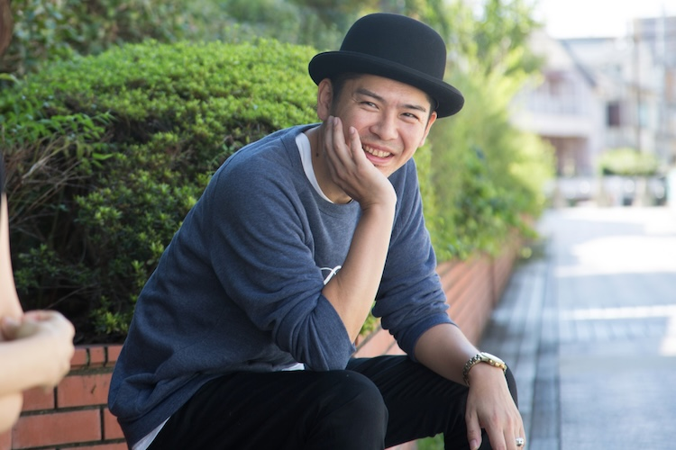

『岸辺の旅』（黒沢清監督）、『ヘヴンズストーリー』（瀬々敬久監督）、『舟を編む』（石井裕也監督）ほか、錚々たる作品で助監督を務めてきた菊地健雄監督のデビュー作『ディアーディアー』は、リョウモウシカという幻のシカに人生を翻弄された過去を持つ三兄妹が父親の危篤をきっかけに再集結したことで巻き起こる騒動を可笑しくも切ない筆致で描いた人間喜劇だが、ミニシアター全盛時の日本映画を支えてきた俳優陣が名を連ねるキャスティングも本作の見どころの一つ。駆け落ち夫と離婚間近の妹・顕子を演じた中村ゆり、シカ事件が原因で精神を患う次男・義夫を演じた斉藤陽一郎、父親の莫大な借金を背負う長男・冨士夫を演じ、同時にこの映画のプロデューサーも務める桐生コウジの３人に話を聞きました。
スタッフもキャストも世代的に近いから、主導権は監督が握るんだけど、全員が意見を言い合う感じが心地良かったですね。（中村）
長男、冨士夫役を演じられた桐生さんは本作のプロデューサーでもありますが、ご自身の実体験も織り込まれているそうですね。
桐生：
実はそれは後付けで。僕も父親を数年前に亡くしていて、１億円くらいの会社の負債を長男として引き継いだんです。劇中の冨士夫も借金を抱えていて、顕子に「土地売っちゃえばいいのに」と言われますけど、実際、目に見えない変な縛りがあって放棄できなかったりするものなんですよ。あと、お茶の詐欺の話が出てきますけど、あれも…
中村：
ちょっと待って。完全に当て書きじゃないですか（笑）
桐生：
いやいや、聞いて下さい（笑）
斉藤：
聞きますよ（笑）
桐生：
父親の会社が不動産関係だったんで、測量詐欺っていうのに合ったんです。土地を売るために測量をする必要があると言われて、お金を支払ったけど、実際は何もしてなくて騙されたわけです。でも脚本の段階でその話は一切してないんです。これは本当に。脚本家（杉原憲明）がそういう方向に持っていってシンクロしたので不思議だなと思いましたね。
中村：
きっとそういう雰囲気が漂ってたんでしょうね（笑）
中村さん、斉藤さんの二人は知る由もなかったことなんですね（笑） これが初監督作になる菊地健雄監督を起用されたのはどういった経緯だったんですか？
桐生：
僕が初めてプロデュースした映画『市民ポリス６９』（本田隆一監督）で、助監督をお願いした縁ではあるんですが、これはよく訊かれるんですけど、そんなに根拠がないんですよ。
中村：
そこは後付けて！（笑）
斉藤：
「あいつでいいか！」みたいなことなんでしょ（笑）
桐生：
初めてってことは監督力については未知なわけで、そうすると人を見るしかない。いわゆる人間力っていうものが監督の技術のひとつであるならば、それがまず一番の決め手でしたね。
助監督として多くの現場を経験されているだけあって、初監督とは思えないくらい映画は老獪な仕上がりでしたけど、現場での監督の印象は？
斉藤：
僕は、元々知り合いだったんです。確か『パビリオン山椒魚』（冨永昌敬監督）で助監督で入っていたのが出会いだったのかな。その後も現場で何度か一緒になって、共通の知り合いもいる吞み仲間でもあったので、演出に関しては分からなくても、現場でのフットワークみたいなものは見えるから安心感はありましたね。初監督する時は使って下さいねって話はしていたので、それが果たされて、ありがとうございますって感じで。
中村：
そういう約束って、なかなか守ってくれないですからね。
斉藤：
社交辞令で終わってしまうという（笑）
問題を抱えた登場人物が多いのでハマり役というと語弊があるかもしれないですけど、演技派揃いのとても心得たキャスティングですよね。熱心な映画ファンのツボを押さえてるというか。
中村：
役を頂いてから判明したのが、昔、ほんの少しだけ出演させて頂いた映画『ユダ』（瀬々敬久監督）に、まだ学生だった菊地監督が見習いとして現場にいらっしゃったみたいなんです。未熟な私を見られてるんだって思って「やだ！」って思って（笑） 今回のカメラマンの佐々木（靖之）さんも実は『ユダ』に参加されていて、皆が成長して再会できてることが嬉しくて。スタッフもキャストも世代的に近いから、主導権は監督が握るんだけど、全員が意見を言い合う感じが心地良かったですね。本当に映画を好きな人達が集まって、伸び伸び作るみたいな環境は、穏やかだけどマニアックな監督のキャラクターのおかげだった気がします。全員がスパークしてる感じはありました。
軸は三兄妹の話なんですけど、それぞれのエピソードが同時進行する構成で、脇を固める俳優との調和も絶妙ですよね。
斉藤：
確かにそれぞれが乗り越えなきゃいけないものを抱えているから、それぞれに見せ場がありますよね。
周りがブレないおかげで、義夫はブレることが出来た。どれくらい役同士の距離感を持つか逆算をしていった感じはあったので。（斉藤）
中村さんは、山本剛史さんとの芝居が多いですね。山本さんは、山下敦弘監督の映画での怪演の印象が強いですが。
中村：
実は私、３年前に長塚圭史さんの舞台（葛河思潮社『浮標』）で山本さんとはご一緒していて。期間にして丸２ヶ月。山本さんって普段から独特な存在感のある方なんですね。元カレっていう私にとっては重要な役だから、脚本を読んで誰がやるのかなって思ってたら、山本さんに決まって、濃い人来たなあって（笑） でも今思えば、山本さんにしか出来ない役だなって。二枚目なのに、どこかインチキ臭くて何考えてるか分からない（笑） この人しかいないじゃん！って感じました。
斉藤：
素晴らしかったですよね。
中村：
現場では、なるべくお互い優しくし合うように心掛けた気がします。恋愛感情に近いものが生まれるように。
斉藤：
それまでは優しくなかったってこと？
中村：
山本さんが私に対して若干ビビっていたらしくて（笑）
桐生：
彼は本当に緊張してましたよ。中村さんに失礼があってはいけないって思ってたらしいです。
中村：
そうなんですね（笑） でも、登場人物は、ろくでもない人間ばかりですけど、皆さんそれを気負いなく演じられてますよね。
桐生：
キャスティングって大事じゃないですか。そもそも、この２人（中村さんと斉藤さん）に決めた経緯も、狙いとして現場に緊張感が欲しかったんです。内輪受けの芝居が向かない脚本だったので、監督と親し過ぎない人にしたいっていうのがあったんです。
斉藤：
それ、僕じゃない方が良かったってことじゃないですか（笑）
中村：
いやいや。そういう条件を飛び越えてきたっていうことでしょ（笑）
桐生：
いやね、狙ったコメディ芝居は避けたいと思ったので、余計なことをしないで人間の面白さを見せることが出来ると思った２人だったんです。
斉藤：
なんだろう、今日は遺恨を残すような日になりそうですね（笑）
清美（松本若菜）と顕子の微妙な距離感も「分かる、分かる」って感じで。
中村：
松本若菜さんが役の理解力が深いおかげもあって、地元に残った人と都会に出た人との差は出ていますね。あんなに綺麗な人が田舎で寂れてる感じは普通には出せない。松本さんともリハーサルで話し合ったんですけど、監督も男性なのにそこへの理解があったんです。女同士って大人になればなるほど表立ったところで感情を見せなくなるし、だけど会った時はわざとはしゃぐみたいな、ああいうのは監督がやりたかったことだと思うんです。でも、女から見るとタチが悪いのは私が演じた顕子の方ですよね。

離婚寸前の夫（柳憂怜）との関係性も不思議ですよね。何でそんな相手と駆け落ちしたんだろうって。
中村：
若い時は愛がすべてだったんでしょうね。
桐生：
田舎を出たくて誰でもいいから付いていったってことじゃないの？
中村：
でも結局は別れてないし、若干の甘さは２人の関係性にあるじゃないですか。人間的な愛情面では繋がりのある２人だと思うし、清一も駄目だけど愛おしいところがあるので。
桐生：
柳憂怜さんとの絡みはむしろ僕の方があったくらい顕子は清一に呆れていて相手にしない感じですね。顕子は別れたかったのか、それともどこかで戻りたいような気持ちがあったのか、脚本ではどちらとも解釈できるけど、中村さんはどちらで演じてたんですか？
中村：
別れたいけど、思い切りが無くて、お酒に逃げてるんでしょうね。「別れる」ということの本当の意味を実感できてない。顕子はそんな強い意志で実家に戻ってきてるわけじゃないし、顕子に限らず、明確な目的なんか持ってない三兄妹って感じはしますよね。
帰郷の理由も父親の危篤で、能動的ではないですからね。そこで過去のシカ事件のトラウマが蘇ってくるわけですが、それに１番悩まされているのは斉藤さん演じる義夫です。ささやかな過去の栄光を刺激される存在として唯一の親友の畠中（政岡泰志）がいました。
中村：
政岡さんもまた個性的な方ですからね。
斉藤：
政岡さんは畠中として現場に存在したから、そこはブレないですよね。政岡さん含め周りがブレないおかげで、義夫はブレることが出来たという関係性でしたね。だから監督とのディスカッションの方が長かったかもしれない。クライマックスの葬儀のシーンへ向かうまでにどれくらい役同士の距離感を持つかっていう逆算をしていった感じはあったので。
畠中は義夫の嘘について薄々気付いていたようにも取れますよね。
斉藤：
それも恐いですよね。でも僕の中では、子供の頃の虚言はまだしも、基本はバレてないと思って嘘をついてるはずだから、演じるにあたって、相手には気付かれてないんだって認識でいる方が成立するって思ってやっていました。
深いですね。義夫の病気について事前に調べたりもしましたか。
桐生：
企画の段階では、現実と妄想の境い目が分からなくなる「演技性人格障害」って病気だったんですけど、脚本にしていく中で具体的な名前は排除して、精神を病んでいる人ってことであとは任せたんです。
斉藤：
その病名自体、僕は初めて聞きましたからね。
桐生：
たぶん病んでいる人って、本人は分かっていないものだからね。
中村：
私、実は撮影が終わった後に、統合失調症の方と会う機会があって、人前に出る時にちゃんとしようとしてました。だから、お兄ちゃん（義夫）もちゃんとしようとしてたなって思い出したりしました。
斉藤：
でも、あんまりそこを掘り過ぎちゃうと下手に整合性を求め出しちゃたりして、役が病気に浸食されて、映画のテイストと違ってきたりすると思ったので、多かれ少なかれ病みって皆抱えてるものだからってくらいの意識でやっていました。（桐生さんに）え、これ、間違ってましたか？（笑）
桐生：
いや大丈夫ですよ（笑）
最初から監督の故郷で撮影すると決めていたわけじゃないんです。たまたま山や森っていう流れでロケ地が足利に決定したので。（桐生）
父親が亡くなった後に遺品整理をするシーンはギクシャクしていた３人が一時的に心を通わすような感じがあって印象的でした。
桐生：
言われてみれば、３人で笑顔を交わしたのはあのシーンだけですね。
中村：
人が死ぬということって、周囲の人間関係にちょっとした変化を起こすと思うんです。近しい友人に不幸があった時を振り返っても、想像しないようなことが家族内で起きるんだって知ったんです。たとえ嫌い合っていたとしても、葬儀に向かって瞬間的に纏まらなければいけないですからね。
序盤では父親に対して負の言葉しかないので、その対比が面白かったです。３人にとっての父親ってどういう存在だったんでしょうか。
桐生：
冨士夫は、亡くなったことでホッとしたと思うんですよね。２人ほどは父親を嫌ってないんですよ。冨士夫は街に留まっていたわけだから。だけど、呪縛が解けてどこかホッとはしたはずですよね。遺品整理にしてもかなりドライだったけど、あそこは迷ったんです。でも実際あんなもんなのかな。
斉藤：
葬儀って畏まってはいますけど、変なテンションになるものですよね。
桐生：
話をシカに戻すと、シカ担当は、まあ彼（義夫）ですけど、弟がシカに縛られてるってのは冨士夫も分かっているわけで、顕子もどこか心配はしていますよね。弟を通してのシカって感じになるのかな。
中村：
シカは３人にとって過去の栄光みたいなものだけど、それって狭いコミュニティの中での話に過ぎないですよね。シカじゃなくても何でもよかったような気がして。皆、何かのせいにして自分の人生を否定したいところがあって、たまたまそれがシカであっただけで。シカのせいであり、シカのおかげでもあると思う。
義夫と顕子にとっては街を出る口実であったかもしれないですからね。皆さんは故郷への特別な想いってありますか？
斉藤：
僕はあまり無いんですよね。中学の時に親の転勤でこっちに出てきたきりなんで。自分の意志での上京ではないのでそういう感覚はあまり分からないんですよ。
中村：
私は上京したのは早かったですけど、地元といまだに密接で、確かに帰りづらい時期というか、自分のメンタル的に地元の友達に気軽に会えない時期というのはありました。
斉藤：
そういう感覚の方がこの映画に近いね。
中村：
私は大阪なので、東京に出なくても事足りると言えば事足りる。あまりうまくいってない時期に大阪に帰ることのプレッシャーというのは若い時にはありましたね。帰りづらいし、居場所が無い。
桐生：
菊地監督もそうなんですよ。僕も東京生まれなので実は故郷への感覚は分からないんですけど。彼は足利から東京に出てきた人だから、故郷への思いは込めてるとは思いますよ。最初のプロットは僕が書いて、脚本作りは、僕と監督と脚本家の三者でずっとやっていたので、彼の意向はありましたけど、ただ最初から彼の故郷の足利で撮影すると決めていたわけじゃないんです。たまたま山や森っていう流れでロケ地が足利に決定したので。

最近だと『ローリング』や『お盆の弟』であったり、オール地方ロケの映画が続けて公開されていますよね。
桐生：
重なってますよね。その２作品と比較されることが多いんです。北関東三部作みたいに言われたりして（笑） 良いのか悪いのか。
中村：
それは良いじゃないですか。
斉藤：
そうですよ。それはある種の共時性であって、しかも良い流れなのに、桐生さんは濁流のようにそれに逆らおうとするんだから（笑）
やっぱり意図しなかった共時性なんですね。でも地方都市の物語が続いてる理由って何故だと思いますか。
桐生：
撮れる環境がないっていうのが理由の１つだと思いますね。この映画のロケハンは脚本の後だったんです。菊地監督が助監督の仕事で忙しくて、脚本自体も足掛け３年くらい掛かったんです。「すいません。〜組に呼ばれて参加してきます」と言われると２、３ヶ月拘束されてしまう。だからロケハンも先行して僕1人で行ったんです。足利市役所に行ったら、『バンクーバーの朝日』の撮影で街が盛り上がった後で、「映像のまち推進課」という新しい課が出来たばかりで、その第一作目がこの映画なんです。後日談として、菊地監督は足利の人だよってことになった。
中村：
巡り合わせですよね。でも『ローリング』は観ましたけど、すっごく面白かったから、その流れに乗せてもらえるのはとても有り難いことですよね。
桐生：
いや、本当に逆らってはないですから（笑）
斉藤：
なんでしょうね。ちょうどそういう年頃なのかな（笑）
冒頭で、菊地凛子さんもスポット出演されていますね。
桐生：
あれは監督との友情出演ですね。本当にワンシーンだけですけど（笑） 実は、染谷君演じるタカシの恋人としてコンビで冨士夫を唆して、お寺の金を奪う役でって話もあったんですよ。
染谷さんは癖のある役柄で効いてました。桐生さんは、足蹴にされたりもしていますけど。
中村：
快感でしたか？（笑）
桐生：
快感はないけど、あそこは生々しくね。でもああいうのは僕の経歴的には慣れてるので。十八番で。むしろ当てる方をやってたくらいなんで（笑）
最後に葬儀場に残されて感情を爆発させるっていうそこに監督の桐生さんへの愛があって、何度もテイクを重ねた気がしましたね。（斉藤）
３人がぶつかる葬儀のシーンは、物語的なクライマックスでもありますけど、ほぼカットを割らずに、移動カメラの長廻しで撮っていますよね。アルトマンを想起させるような。あれは皆さん大変でしたよね？
桐生：
ああいうカット割になるのは事前に聞かされてた？
中村：
一連で撮るってのは聞かされていましたね。
桐生：
撮影の佐々木（靖之）君が凄いんです。シーン１からカット割のメモが全部ノートにまとめてあるんです。撮影部はここまでプラン立てるものなんだって知って驚いたんですけど。あの葬儀のシーンについても葬儀場を使えるタイムリミットがあって、普通にカットを割っていたら撮りきれないので、スタッフ各所のアイデアを総合して、結果的にああいう見せ場が出来上がった。
中村：
すごく生っぽく撮ってるけど、流れの中で動きの段取りもありつつ、感情を乗せるように芝居を持っていかなくちゃいけなくて、いい意味で緊張感がありましたね。
斉藤：
リハーサルは結構したよね。でも何よりみんな早く帰りたかった（笑）
桐生：
最終日に近くて、確かに１番疲れきってる中での撮影ではあったね。
斉藤：
でも、桐生さんが最後に葬儀場に残されて感情を爆発させるっていうそこに監督の桐生さんへの愛があって拘っていて、あそこは何度もテイクを重ねた気がしましたね。３人ともお互いを引き出すためにフラストレーションをぶつけ合うみたいなところは大変でしたよね。
桐生：
怒りは取っておいてくれってずっと言われていたんですよ。抑えてるつもりでも、ちょっとでも出ると、「まだ取っておきましょう」って。一貫した演出プランはあったみたいで。

斉藤：
でもプロデューサーやりながら演じなきゃいけないって、桐生さんは大変だったと思いますよ。各所の都合も気にしながら演じてるわけだから。
桐生：
現場に入ったら、本当はそんなの引きずってたらいけないんだけど、僕は兼任してた方が力が抜けてちょうどいいんですよ。役に没頭すると力が入り過ぎちゃう性格だから。
中村：
でもそれ分かる気がします。長男の冨士夫っていう役柄的にもね。撮影期間中、桐生さんが毎日、車でホテルに迎えに来てくれたんですよ。日ごとにショボショボになっていくのが分かったんです。大丈夫かなって（笑）
プロデューサーは、演者さんの送迎もするものなんですか？（笑）
桐生：
普通はやらないです（笑） これには理由が２つあるんです。１つは映画のロケをやると１番掛かるのが人件費なので、そこを僕が被ることで予算的な余裕を持たせていること。もう１つは、俳優部を預かっている意識です。今回、それぞれの事務所に俳優１人で来て下さいと伝えたんです。それを信じて送り出してくれてるわけで、僕には預かっている責任ってのがあったんです。スタッフ、キャスト、両方の気持ちを汲みながらバランスには気を使いました。
斉藤：
警官役で出演もしてくれてましたよね（笑）
桐生：
現地の人も協力してくれましたしね。菊地監督の親族も全面協力で（笑）
斉藤：
それこそ本当のアットホームだ（笑）
中村：
私、菊地監督のお父さんに早朝、撮影の前に畑に呼ばれたりしましたから。現場の勝手や事情はもちろん分からないから、新鮮な野菜を私達に食べてほしいっていう一心で。でもそういう気持ちは嬉しかったですね。お母さんは手製の浅漬けを食べさせてくれたり。
桐生：
劇中に出てくる料理も監督のお母さんがすべて作ってくれてますからね。
中村：
今こういう映画を作ろうと思ったら、密に協力してくれてる人達がいないと出来ないところがありますよね。いわゆる単館で掛かってたような中規模の映画が作れない現状があると思うんです。資金繰りってリアルな話もあると思いますけど、極端なやり方をしないと望むような作品が撮れない。もちろん馴れ合いだけで作るのは駄目ですけど。
プロフェッショナルな人達が、決して高くないバジェットで、内容のある作品を作るっていうのを大事にしてる気がします。（中村）
超大作か、自主制作に近い低予算な作品の二極化が今は進んでいて、若い世代の監督が商業映画をトライできる土壌が無くなっていると叫ばれてますよね。この映画は後者に近いのかもしれないですけど、それを感じさせない強度があると思います。
中村：
役者としては大作にも出演したい気持ちもある一方で、こういう映画を大事にしていきたいって気持ちが強い。それはきっとスタッフの方々も思っていると思うんです。佐々木（靖之）さんなんかそうですけど、クオリティのあるプロフェッショナルな人達が、決して高くないバジェットで、内容のある作品を作るっていうのを大事にしてる気がします。
斉藤：
それが還元されていくといいですよね。皆、パッションで頑張ってるわけだから、疲弊して終わってしまうんじゃなくて、いい方向に繋がっていくようにしたいですね。
そうですよね。プロデューサーとしてはそういう意気込みはありますか？
桐生：
もちろんあります。とにかく観て欲しいです。作って終わりじゃなくて、映画は観てもらって完成ですから。是非、お願いします。

では、最後に一応、観て頂ける方々に一言。
桐生：
でもね、プロデューサーとしては２作目ですが、起死回生の想いがあるんです。今回は企画製作から宣伝配給までやらせて頂いて、スポンサーも募ってない自己資金のみの映画ですけど、さっき中村さんが言ってくれたように、プロフェッショナルな人達が集まってくれたおかげで、こういう自信を持って届けられる映画が出来上がったと思うんですよね。
斉藤：
手前味噌ですけど、面白い映画になってるなって思うんです。観てさえ頂ければきっと気に入ってもらえると思うし、決して力の無い作品ではないと思うので、とにかく観てもらえたらなって感じです。う〜ん、難しいな。気の利いたことを言えれば良いんだけど（笑）
中村：
そんな気の利いたことを言わなきゃいけないプレッシャーかけないで下さいよ（笑）
斉藤：
いやいや。今日は中村さんの的確な言葉が沢山ありましたよ。
桐生：
そうだよね。そこしか使われないんじゃないかな。じゃあもう中村ゆりの単独インタビューってことにしておいて下さい。
中村：
なんか兄妹感出てますね（笑） 桐生さんは、恐い人って先入観があったけど、実はすごく真面目だし、繊細で几帳面な人なんです。撮影中の送迎の車の中で色んなお話をしながら知ったんですけど（笑） そんな桐生さんの人間性が詰まった映画だなって思いますね。